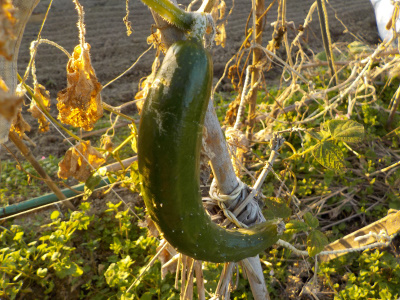
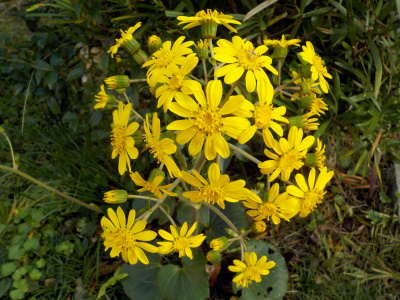
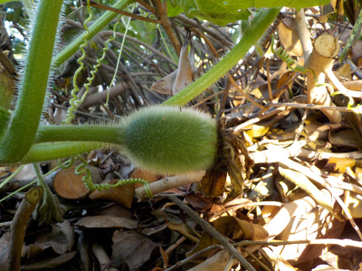
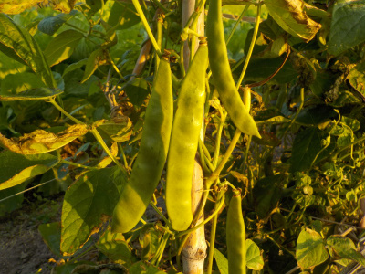

このキュウリはきっと食べないだろうな。
2022/10/30

キュウリがありますが、もう大きくはならないでしょう。
ツルのほとんどは茶色く枯れているので、そのうちこのキュウリも枯れるでしょう。
2022/10/30

キュウリがありますが、もう大きくはならないでしょう。
ツルのほとんどは茶色く枯れているので、そのうちこのキュウリも枯れるでしょう。
2022/10/23

毎年花が咲くと思うんですが、ツワブキはキレイです。
個体によって形はいろいろなんですが、この写真のものは特にキレイだと思いました。今日はいいものが見れて良かった。
2022/10/23

大きくなった冬瓜を収穫して食べていますが、今頃新しく実が出来ていました。10月でも新しい実ができるんだ。
寒くなるまでにどれだけ大きくなるでしょうね。既に沢山の実があるので、もう大きくならなくてもいいかな。
2022/10/16

夕方にモロッコ豆を沢山収穫しました。
夕日がポカポカ暖かくて気持ちよかったです。もうすっかり秋です。
過去の日記
畑仕事じゃないよ。